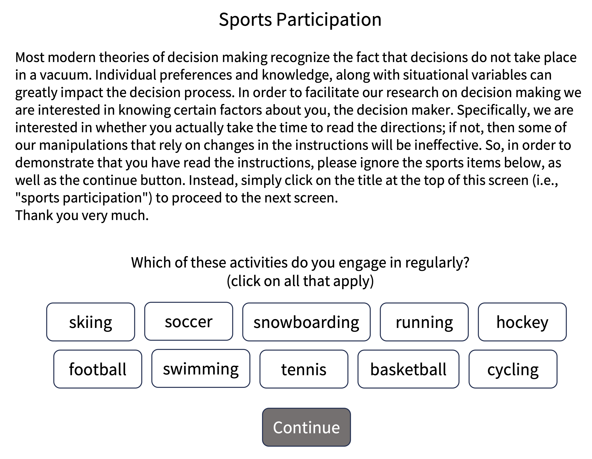

12 Data collection
- Outline key features of informed consent and participant debriefing
- Identify additional protections necessary for working with vulnerable populations
- Review best practices for online and in-person data collection
- Implement data integrity checks, manipulation checks, and pilot testing
You have selected your measure and manipulation and planned your sample. Your preregistration is set. Now it’s time to think about the nuts and bolts of collecting data. Though the details may vary between contexts, this chapter will describe some general best practices for data collection.1 We organize our discussion of these practices around two perspectives: the participant and the researcher.
1 The metaphor of “collection” implies to some researchers that the data exist independent of the researcher’s own perspective and actions, so they reject it in favor of the term “data generation.” Unfortunately, this alternative label doesn’t distinguish generating data via interactions with participants on the one hand and generating data from scratch via statistical simulations on the other. We worry that “data generation” sounds too much like the kinds of fraudulent data generation that we talked about in Chapter 4, so we have opted to keep the more conventional “data collection” label.
The first section takes the perspective of a participant. We begin by reviewing the importance of informed consent. A key principle of running experiments with human participants is that we respect their autonomy, which includes their right to understand the study and choose whether to take part. When we neglect the impact of our research on the people we study, we not only violate regulations governing research, we also create distrust that undermines the moral basis of scientific research.
In the second section, we begin to shift perspectives, discussing the choice of online vs. in-person data collection and some of the advantages of online data collection for transparency. We consider how to optimize the experimental experience for participants in both settings. We then end by taking the experimenter’s perspective more fully, discussing how we can maximize data quality (contributing to measurement precision) using pilot testing, manipulation checks, and attention checks, while still being cognizant of both changes to the participant’s experience and the integrity of statistical inferences (both contributing to bias reduction).
The rise of online data collection
Since the rise of experimental psychology laboratories in university settings during the period after World War 2 (Benjamin 2000), experiments have typically been conducted by recruiting participants from what has been referred to as the “subject pool.” This term denotes a group of people who can be recruited for experiments, typically students from introductory psychology courses (Sieber and Saks 1989) who are required to complete a certain number of experiments as part of their course work. The ready availability of this convenient population inevitably led to the massive over-representation of undergraduates in published psychology research, undermining its generalizability (Sears 1986; Henrich, Heine, and Norenzayan 2010).
Yet over the last couple of decades, there has been a revolution in data collection. Instead of focusing on university undergraduates, increasingly, researchers recruit individuals from crowdsourcing websites like Amazon Mechanical Turk (AMT) and Prolific Academic. Crowdsourcing services were originally designed to recruit and pay workers for ad-hoc business tasks like retyping receipts, but they have also become marketplaces to connect researchers with research participants who are willing to complete surveys and experimental tasks for small payments (Litman, Robinson, and Abberbock 2017). As of 2015, more than a third of studies in top social and personality psychology journals were conducted on crowdsourcing platforms (another third were still conducted with college undergraduates) and this proportion is likely continuing to grow (Anderson et al. 2019).
Initially, many researchers worried that crowdsourced data from online convenience samples would lead to a decrease in data quality. However, several studies suggest that data quality from online convenience samples is typically comparable to in-lab convenience samples (Mason and Suri 2012; Buhrmester, Kwang, and Gosling 2016). In one particularly compelling demonstration, a set of online experiments were used to replicate a group of classic phenomena in cognitive psychology, with clear successes on every experiment except those requiring sub-50 millisecond stimulus presentation (Crump, McDonnell, and Gureckis 2013). Further, as we discuss below, researchers have developed a suite of tools to ensure that online participants understand and comply with the instructions in complex experimental tasks.
Since these initial successes, however, attention has moved away from the validity of online experiments to the ethical challenges of engaging with crowdworkers. In 2020, nearly 130,000 people completed MTurk studies (Moss et al. 2020). Of those, an estimated 70% identified as White, 56% identified as women, and 48% had an annual household income below $50,000. A sampling of crowd work determined that the average wage earned was just $2.00 per hour, and less than 5% of workers were paid at least the federal minimum wage (Hara et al. 2018). Further, many experimenters routinely withheld payment from workers based on their performance in experiments. These practices clearly violate ethical guidelines for research with human participants, but are often overlooked by institutional review boards who may be unfamiliar with online recruitment platforms or consider that platforms are offering a “service” rather than simply being alternative routes for paying individuals.
With greater attention to the conditions of workers (e.g., Salehi et al. 2015), best practices for online research have progressed considerably. As we describe below, working with online populations requires attention to both standard ethical issues of consent and compensation, as well as new issues around the “user experience” of participating in research. The availability of online convenience samples can be transformative for the pace of research, for example by enabling large studies to be run in a single day rather than over many months. But online participants are vulnerable in different ways than university convenience samples, and we must take care to ensure that research online is conducted ethically.
12.1 Informed consent and debriefing
As we discussed in Chapter 4, experimenters must respect the autonomy of their participants: they must be informed about the risks and benefits of participation before they agree to participate. Researchers must also discuss and contextualize the research by debriefing participants after they have completed the study. Here we look at the nuts and bolts of each of these processes, ending with guidance on the special protections that are required to protect the autonomy of especially vulnerable populations.
12.1.1 Getting consent
Experimental participants must give consent. In most regulatory frameworks, there are clear guidelines about what the process of giving consent should look like. Typically participants are expected to read and sign a consent form: a document that explains the goals of the research and its procedures, describes potential risks and benefits, and asks for participants’ explicit consent to participate voluntarily. Table 12.1 gives the full list of consent form requirements from the US Office for Human Research Protections, and Figure 12.1 shows how these individual requirements are reflected in a real consent form used in our research.
| Requirement | |
|---|---|
| 1 | A statement that the study involves research |
| 2 | An explanation of the purposes of the research |
| 3 | The expected duration of the subject’s participation |
| 4 | A description of the procedures to be followed |
| 5 | Identification of any procedures which are experimental |
| 6 | A description of any reasonably foreseeable risks or discomforts to the subject |
| 7 | A description of any benefits to the subject or to others which may reasonably be expected from the research |
| 8 | A disclosure of appropriate alternative procedures or courses of treatment, if any, that might be advantageous to the subject |
| 9 | A statement describing the extent, if any, to which confidentiality of records identifying the subject will be maintained |
| 10 | For research involving more than minimal risk, an explanation as to whether any compensation or medical treatments are available if injury occurs |
| 11 | An explanation of whom to contact for answers to pertinent questions about the research and research subjects’ rights |
| 12 | A statement that participation is voluntary, refusal to participate will involve no penalty, and that subject may discontinue participation at any time without penalty |

These are just samples. Since ethics regulation is almost always managed at the institutional level, your local ethics board will often provide guidance on the specific information you should include in the consent form and they will almost always need to approve the form before you are allowed to begin recruiting participants.
When providing consent information, researchers should focus on what someone might think or feel as a result of participating in the study. Are there any physical or emotional risks associated? What should someone know about the study that may give them pause about agreeing to participate in the first place? Our advice is to center the participant in the consent process rather than the research question. Information about specific research goals can typically be provided during debriefing.2
2 Some experimenters worry that informing participants about the study that they are about to participate in may influence their behavior in the study via so-called “demand characteristics”, discussed in Chapter 9. But the goal of a consent form is not to explain the specific psychological construct being manipulated. Instead, a consent form typically focuses on the experience of being in the study (for example, that a participant would be asked to provide quick verbal responses to pictures). This sort of general explanation should not create demand characteristics.
If there are specific pieces of information that about study goals or procedures that must be withheld from participants during consent, deception of participants may be warranted. Deception can be approved by ethics boards as long as it poses little risk and is effectively addressed via more extensive debriefing. But an experimental protocol that includes deception will likely undergo greater scrutiny during ethics review, as it must be justified by a specific experimental need.
During the consent process, researchers should explain to participants what will be done with their data. Requirement 9 in Table 12.1) merely asks for a statement about data confidentiality, but such a statement is a mere minimum. Some modern consent forms explicitly describe different uses of the data and ask for consent for each. For example, the form in Figure 12.1 asks permission for showing recordings as part of presentations.3
3 Some ethics boards will ask for consent for sharing even anonymized data files. As we discuss in Chapter 13, fully anonymized data can often be shared without explicit consent. You may still choose to ask participants’ permission, but this practice may lead to an awkward situation, for example, a dataset with heterogeneous sharing permissions such that most but not all data can be shared publicly.
12.1.2 Prerequisites of consent
In order to give consent, participants must have the cognitive capacity to make decisions (competence), understand what they are being asked to do (comprehension), and know that they have the right to withdraw consent at any time (voluntariness) (Kadam 2017).
Typically, we assume competence for adult volunteers in our experiments, but if we are working with children or other vulnerable populations (see below), we may need to consider whether they are legally competent to provide consent. Participants who cannot consent on their own should still be informed about participation in an experiment and, if possible, you should still obtain their assent (informal agreement) to participate. When a person has no legal ability to consent, you must obtain consent from their legal guardian. But if they do not assent, you should also respect their decision not to participate – even if you previously obtained consent from their guardian.
The second prerequisite is comprehension. It is good practice to discuss consent forms verbally with participants, especially if the study is involved and takes place in person. If the study is online, ensure that participants know how to contact you if they have questions about the study. The consent form itself must be readable for a broad audience, meaning care should be taken to use accessible language and clear formatting. Consider giving participants a copy of the consent form in advance so they can read at their own pace, think of any questions they might have, and decide how to proceed without any chance of feeling coerced (Young, Hooker, and Freeberg 1990).
Finally, participants must understand that their involvement is voluntary, meaning that they are under no obligation to be involved in a study and always have the right to withdraw at any time. Experimenters should not only state that participation is voluntary, they should also pay attention to other features of the study environment that might lead to structural coercion (Fisher 2013). For example, high levels of compensation can make it difficult for lower-income participants to withdraw from research. Similarly, factors like race, gender, and social class can lead participants to feel discomfort around discontinuing a study. It is incumbent on experimenters to provide a comfortable study environment and to avoid such coercive factors wherever possible.
12.1.3 Debriefing participants
Once a study is completed, researchers should always debrief participants. A debriefing is composed of sevearl parts: (1) gratitude, (2) discussion of goals, (3) explanation of deception (if relevant), and (4) questions and clarification (Allen 2017). Together these serve to contextualize the experience for the participant and to mitigate any potential harms from the study.
Gratitude. Thank participants for their contribution! Sometimes thanks is enough (for a short experiment), but many studies also include monetary compensation or course credit. Compensation should be commensurate with the amount of time and effort required for participation. Compensation structures vary widely from place to place; typically local ethics boards will have specific guidelines.
Discussion of goals. Researchers should share the purpose of the research with participants in, aiming for a short and accessible statement that avoids technical jargon. Sharing goals is especially important when some aspect of the study appears evaluative – participants will often be interested in knowing how well they performed against their peers. For example, a parent whose child completed a word-recognition task may request information about their child’s performance. It can assuage parents’ worries to highlight that the goals of the study are about measuring a particular experimental effect, not about individual evaluation and ranking.4
Explanation of deception. Researchers must reveal any deception during debriefing, regardless of how minor the deception seems to the researcher. This component of the debriefing process can be thought of as “dehoaxing” because it is meant to illuminate any aspects of the study that were previously misleading or inaccurate (Holmes 1976). The goal is both to reveal the true intent of the study and to alleviate any potential anxiety associated with the deception. Experimenters should make clear both where in the study the deception occurred and why the deception was necessary for the study’s success.
Questions and clarification. Finally, researchers should answer any questions or address any concerns raised by participants. Many researchers use this opportunity to ask participants about their own ideas about the study goals. This practice not only illuminates aspects of the study design that may have been unclear to or hidden from participants, it also begins a discussion where both researchers and participants can communicate about this joint experience. This step is also helpful in identifying negative emotions or feelings resulting from the study (Allen 2017). When participants do express negative emotions, researchers are responsible for sharing resources participants can use to help them.5
4 At the study’s conclusion, you might also consider sharing any findings with participants – many participants appreciate learning about research findings that they contributed to, even months or years after participation.
5 In the case that participants report substantial concerns or negative reactions to an experiment – during debriefing or otherwise – researchers will typically have an obligation to report these to their ethics board.
12.1.4 Special considerations for vulnerable populations
Regardless of who is participating in research, investigators have an obligation to protect the rights and well-being of all participants. Some populations are considered especially vulnerable because of their decreased agency – either in general or in the face of potentially coercive situations. Research with these populations receives additional regulatory oversight. In this section, we will consider several vulnerable populations.
Children. Children are some of the most commonly used vulnerable populations in research because the study of development can contribute both to children’s welfare and to our understanding of the human mind. In the US, children under the age of 18 may only participate in research with written consent from a parent or guardian. Unless they are pre-verbal, children should additionally be asked for their assent. The risks associated with a research study focusing on children also must be no greater than minimal unless participants may receive some direct benefit from participating or participating in the study may improve a disorder or condition the participant was formally diagnosed with.
People with disabilities. There are thousands of disabilities that affect cognition, development, motor ability, communication, and decision-making with varying degrees of interference, so it is first important to remember that considerations for this population will be just as diverse as its members. No laws preclude people with disabilities from participating in research. However, those with cognitive disabilities who are unable to make their own decisions may only participant with written consent from a legal guardian and with their individual assent (if applicable). Those retaining full cognitive capacity but who have other disabilities that make it challenging to participate normally in the study should receive appropriate assistance to access information about the study, including the risks and benefits of participation.
Incarcerated populations. Nearly 2.1 million people are incarcerated in the United States alone (Gramlich 2021). Due to early (and repugnant) use of prisoners as a convenience population that could not provide consent, the use of prisoners in research has been a key focus of protective efforts. The US Office for Human Research Protections (OHRP) supports their involvement in research under very limited circumstances – typically when the research specifically focuses on issues relevant to incarcerated populations (“Prisoner Involvement in Research” 2003). When researchers propose to study incarcerated individuals, the local ethics board must reconfigure to include at least one active prisoner (or someone who can speak from a prisoner’s perspective) and ensure that less than half of the board has any affiliation to the prison system, public or private. Importantly, researchers must not suggest or promise that participation will have any bearing on an individual’s prison sentence or parole eligibility, and compensation must be otherwise commensurate with their contribution.
Low-income populations. Participants with fewer resources may be more persuaded to participate by monetary incentives, creating a potentially coercive situation. Researchers should consult with their local ethics board to conform to local standards for non-coercive payment.
Indigenous populations. There is a long and negative history of the involvement of indigenous populations in research without their consent. In the case that research requires the participation of indigenous individuals – because of potential benefits to their communities, rather than due to convenience – then community leadership must be involved to discuss the appropriateness of the research as well as how the consent process should be structured (Fitzpatrick et al. 2016).
Crowdworkers. Ethics boards do not usually consider crowdworkers on platforms like Amazon Mechanical Turk to be a specific vulnerable population, but many of the same concerns about diminished autonomy and greater need for protection still arise (see Depth Box below). Without platform or ethics board standards, it is up to individual experimenters to commit to fair pay, which should ideally match or exceed the applicable minimum wage (e.g., the US federal minimum wage). Further, in the context of reputation management systems like those of Amazon Mechanical Turk, participants can be penalized for withdrawing from an experiment – once they have their work “rejected” by an experimenter, it can be harder for them to find new jobs, causing serious long-term harm to their ability to earn on the platform.
12.2 Designing the “research experience”
For the majority of psychology experiments, the biggest factor that governs whether a participant has a positive or negative experience of an experiment is not its risk profile, since for many psychology experiments the quantifiable risk to participants is minimal.6 Instead, it is the participants’ experience. Did they feel welcome? Did they understand the instructions? Did the software work as designed? Was their compensation clearly described and promptly delivered? These aspects of “user experience” are critical both for ensuring that participants have a good experience in the study (an ethical imperative) and for gathering good data. An experiment that leaves participants unhappy typically doesn’t satisfy either the ethical or the scientific goals of research. In this section, we’ll discuss how to optimize the research experience for both in-person and online experiments, as well as providing some guidance on how to decide between these two administration contexts.
6 There are of course exceptions, including research with more sensitive content. Even in these cases, however, attention to the participant’s experience can be important for ensuring good scientific outcomes.
12.2.1 Ensuring good experiences for in-lab participants
A participant’s experience begins even before they arrive at the lab. Negative experiences with the recruitment process (e.g., unclear consent forms, poor communication, complicated scheduling) or transit to the lab (e.g., difficulty navigating or finding parking) can lead to frustrated participants with a negative view of your research. Anything you can do to make these experiences smoother and more predicable – prompt communication, well-tested directions, reserved parking slots, etc. – will make your participants happier and increase the quality of your data.7
7 For some reason, the Stanford Psychology Department building is notoriously difficult to navigate. This seemingly minor issue has resulted in a substantial number of late, frustrated, and flustered participants over the years.
Once a participant enters the lab, every aspect of the interaction with the experimenter can have an effect on their measured behavior (Gass and Seiter 2018)! For example, a likable and authoritative experimenter who clearly describes the benefits of participation is following general principles for persuasion (Cialdini and Goldstein 2004). This interaction should lead to better compliance with experimental instructions, and hence better data, than an interaction with an unclear or indifferent experimenter.
Any interaction with participants must be scripted and standardized so that all participants have as similar an experience as possible. A lack of standardization can result in differential treatment for participants with different characteristics, which could result in data with greater variability or even specific sociodemographic biases. An experimenter that was kinder and more welcoming to one demographic group would be acting unethically, and they also might find a very different result than they intended.
Even more importantly, experimenters who interact with participants should ideally be unaware of the experimental condition each participant is assigned to. This practice is often called “blinding” or “masking”. Otherwise it is easy for experimenter knowledge to result in small differences in interaction across conditions, which in turn can influence participants’ behavior, resulting in experimenter expectancy effects (see Chapter 9)! Even if the experimenter must know a participant’s condition assignment – as is sometimes the case – this information should be revealed at the last possible moment to avoid contamination of other aspects of the experimental session.8
8 In some experiments, an experimenter delivers a manipulation and hence it cannot be masked from them. In such cases, it’s common to have two experimenters such that one delivers the manipulation and another (masked to condition) collects the measurements. This situation often comes up with studies of infancy, since stimuli are often delivered via an in-person puppet show; at a minimum, behavior should be coded by someone other than the puppeteer.
12.2.2 Ensuring good experiences for online participants
The design challenges for online experiments are very different than for in-lab experiments. As the experimental procedure is delivered through a web browser, experimenter variability and potential expectancy effects are almost completely eliminated. On the other hand, some online participants do many hours of online tasks a day and many are multi-tasking in other windows or on other devices. It can be much harder to induce interest and engagement in your research when your manipulation is one of dozens the participant has experienced that day and when your interactions are mediated by a small window on a computer screen.
When creating an online experimental experience, we consider four issues: (1) design, (2) communication, (3) payment policies, and (4) effective consent and debriefing:9
9 For extensive further guidance on this topic, see Litman and Robinson (2020).
Basic UX design. Good experiment design online is a subset of good web user experience (UX) design more generally. If your web experiment is unpleasant to interact with, participants will likely become confused and frustrated. They will either drop out or provide data that are lower quality. A good interface should be clean and well-tested and should offer clear places where the participant must type or click to interact. If a participant presses a key at an appropriate time, the experiment should offer a response – otherwise the participant will likely press it again. If the participant is uncertain how many trials are left, they may be more likely to drop out of the experiment so it is also helpful to provide an indication of their progress. And if they are performing a speeded paradigm, they should receive practice trials to ensure that they understand the experiment prior to beginning the critical blocks of trials.
Communication. Many online studies involve almost no direct contact with participants. When participants do communicate with you it is very important to be responsive and polite (as it is with in-lab participants, of course). Unlike the typical undergraduate participant, the work that a crowdworker is doing for your study may be part of how they earn their livelihood, and a small issue in the study for you may feel very important for them. For that reason, rapid resolution of issues with studies – typically through appropriate compensation – is very important. Crowdworkers often track the reputation of specific labs and experimenters [sometimes through forums or specialized software; Irani and Silberman (2013)]. A quick and generous response to an issue will ensure that future crowdworkers do not avoid your studies.
Payment policies. Unclear or punitive payment policies can have a major impact on crowdworkers. We strongly recommend always paying workers if they complete your experiment, regardless of result. This policy is comparable to standard payment policies for in-lab work. We assume good faith in our participants: if someone comes to the lab, they are paid for the experiment, even if it turns out that they did not perform correctly. The major counterargument to this policy is that some online marketplaces have a population of workers who are looking to cheat by being non-compliant with the experiment (e.g., entering gibberish or even using scripts or artificial intelligence tools to progress quickly through studies). Our recommendation is to address this issue through the thoughtful use of “check” trials (see below) – not through punitive non-payment. The easiest way for a participant to complete your experiment should be by complying with your instructions.
| By answering the following questions, you are participating in a study being performed by cognitive scientists in the Stanford Department of Psychology. If you have questions about this research, please contact us at stanfordpsych251@gmail.com. You must be at least 18 years old to participate. Your participation in this research is voluntary. You may decline to answer any or all of the following questions. You may decline further participation, at any time, without adverse consequences. Your anonymity is assured; the researchers who have requested your participation will not receive any personal information about you. |
|---|
Consent and debriefing. Because online studies are typically fully automated, participants do not have a chance to interact with researchers around consent and debriefing. Further, engagement with long consent forms may be minimal. In our work we have typically relied on short consent statements such as the one from our class that is shown in Table 12.2. Similarly, debriefing often occurs through a set of pages that summarize all components of the debriefing process (participation gratitude, discussion of goals, explanation of deception if relevant, and questions and clarification). Because these interactions are so short, it is especially important to include contact information prominently so that participants can follow up.
The rise of online data collection
Since the rise of experimental psychology laboratories in university settings during the period after World War 2 (Benjamin 2000), experiments have typically been conducted by recruiting participants from what has been referred to as the “subject pool.” This term denotes a group of people who can be recruited for experiments, typically students from introductory psychology courses (Sieber and Saks 1989) who are required to complete a certain number of experiments as part of their course work. The ready availability of this convenient population inevitably led to a vast over-representation of undergraduates in published psychology research, undermining its generalizability (Sears 1986; Henrich, Heine, and Norenzayan 2010).
Yet over the last couple of decades, there has been a revolution in data collection. Instead of focusing on university undergraduates, increasingly, researchers recruit individuals from crowdsourcing websites like Amazon Mechanical Turk (AMT) and Prolific Academic. Crowdsourcing services were originally designed to recruit and pay workers for ad-hoc business tasks such as retyping receipts, but they have become marketplaces to connect researchers with research participants who are willing to complete surveys and experimental tasks for small payments (Litman, Robinson, and Abberbock 2017). As of 2015, more than a third of studies in top social and personality psychology journals were conducted on crowdsourcing platforms (another third were still conducted with college undergraduates); this proportion has likely continued to grow over the years since the last systematic surveys were done (Anderson et al. 2019).
Initially, many researchers worried that crowdsourced data from online convenience samples would lead to a decrease in data quality. However, several studies suggest that data quality from online convenience samples is typically comparable to in-lab convenience samples (Mason and Suri 2012; Buhrmester, Kwang, and Gosling 2016). In one particularly compelling demonstration, Crump, McDonnell, and Gureckis (2013) repeated a set of classic experiments in cognitive psychology using online participants, successfully replicating all except those requiring sub-50 millisecond stimulus presentation. Further, as we discuss below, researchers have developed a suite of tools to ensure that online participants understand and comply with the instructions in complex experimental tasks.
As the use of online data collection rises, it is important to engage with the ethical challenges of working with crowdworkers to collect psychological data. In 2020, nearly 130,000 people completed MTurk studies (Moss et al. 2020). Of those, an estimated 70% identified as White, 56% identified as women, and 48% had an annual household income below $50,000. A sampling of crowd work determined that the average wage earned was just $2.00 per hour, and less than 5% of workers were paid at least the federal minimum wage (Hara et al. 2018). Further, many experimenters routinely withheld payment from workers based on their performance in experiments. These practices – low compensation and base compensation only contingent on performance – clearly violate ethical guidelines for research with human participants, but are often overlooked by institutional review boards who may be unfamiliar with online recruitment platforms.
Working with online populations requires attention to both standard ethical issues of consent and compensation, as well as new issues around the “user experience” of participating in research (Salehi et al. 2015). The availability of online convenience samples can be transformative for the pace of research, for example by enabling large studies to be run in a single day rather than over many months. But online participants are vulnerable in different ways than university convenience samples, and we must take care to ensure that research online is conducted ethically.
12.2.3 When to collect data online?
Online data collection is increasingly ubiquitous in the behavioral sciences. Further, the web browser – alongside survey software like Qualtrics or packages like jsPsych (De Leeuw 2015) – can be a major aid to transparency in sharing experimental materials. Replication and reuse of experimental materials is vastly simpler if readers and reviewers can click on a link and share the same experience as a participant in your experiment. By and large, well-designed studies yield data that are as reliable as in-lab data [see Depth Box above; Buhrmester, Kwang, and Gosling (2016);Mason and Suri (2012);Crump, McDonnell, and Gureckis (2013)].
Still, online data collection is not right for every experiment. Studies that have substantial deception or that induce negative emotions may require an experimenter present to alleviate ethical concerns or provide detailed debriefing. Beyond ethical issues, we discuss four broader concerns to consider when deciding whether to conduct data collection online: (1) population availability, (2) the availability of particular measures, (3) the feasibility of particular manipulations, and (4) the length of experiments.
Population. Not every target population can be tested online. Indeed, initially, convenience samples from Amazon Mechanical Turk were the only group easily available for online studies. More recently, new tools have emerged to allow pre-screening of crowd participants, including sites like Cloud Research and Prolific (Eyal et al. 2021; Peer et al. 2021).10 And it may initially have seemed implausible that children could be recruited online, but during the COVID-19 pandemic a substantial amount of developmental data collection moved online, with many studies yielding comparable results to in-lab studies (e.g., Chuey et al. 2021).11 Finally, new, non-US crowdsourcing platforms continue to grow in popularity, leading to greater global diversity in the available online populations.
10 These tools still have significant weaknesses for accessing socio-demographically diverse populations within and outside the US, however – screening tools can remove participants, but if the underlying population does not contain many participants from a particular demographic, it can be hard to gather large enough samples. For an example of using crowdsourcing and social media sites to gather diverse participants, see DeMayo et al. (2021).
11 Sites like LookIt (https://lookit.mit.edu) now offer sophisticated platforms for hosting studies for children and families (Scott and Schulz 2017).
Online measures. Not all measures are available online, though more and more are. Although online data collection was initially restricted to the use of survey measures – including ratings and text responses – measurement options have rapidly expanded. The widespread use of libraries like jsPsych (De Leeuw 2015) has meant that millisecond accuracy in capturing response times is now possible within web-browsers; thus, most reaction time tasks are quite feasible (Crump, McDonnell, and Gureckis 2013). The capture of sound and video is possible with modern browser frameworks (Scott and Schulz 2017). Further, even measures like mouse- and eye-tracking are beginning to become available (Maldonado, Dunbar, and Chemla 2019; Slim and Hartsuiker 2021). In general, almost any variable that can be measured in the lab without specialized apparatus can also be collected online. On the other hand, studies that measure a broader range of physiological variables (e.g., heart rate or skin conductance) or a larger range of physical behaviors (e.g., walking speed or pose) are still likely difficult to implement online.
Online manipulations. Online experiments are limited to the set of manipulations that can be created within a browser window – but this restriction excludes many different manipulations that involve real-time social interactions with a human being.12 Synchronous chat sessions can be a useful substitute (Hawkins, Frank, and Goodman 2020), but these focus the experiment on the content of what is said and exclude the broader set of non-verbal cues available to participants in a live interaction (e.g., gaze, race, appearance, accent, etc.). Creative experimenters can circumvent these limitations by using pictures, videos, and other methods. But more broadly, an experimenter interested in implementing a particular manipulation online should ask how compelling the online implementation is compared with an in-lab implementation. If the intention is to induce some psychological state – say stress, fear, or disgust – experimenters must trade off the greater ease of recruitment and larger scale of online studies with the more compelling experience they may be able to offer in a controlled lab context.
12 So-called “moderated” experiments – in which the experimental session is administered through a synchronous video chat have been used widely in online experiments for children but these designs are less common in experiments with adults because they are expensive and time-consuming to administer (Chuey et al. 2021).
The length of online studies. One last concern is about attention and focus in online studies. Early guidance around online studies tended to focus on making studies short and easy, with the rationale that crowdsourcing workers were used to short jobs. Our sense is that this guidance no longer holds. Increasingly, researchers are deploying long and complex batteries of tasks to relatively good effect (e.g., Enkavi et al. 2019) and conducting repeated longitudinal sampling protocols (discussed in depth in Litman and Robinson 2020). Rather than relying on hard and fast rules about study length, a better approach for online testing is to ensure that participants’ experience is as smooth and compelling as possible. Under these conditions, if an experiment is viable in the lab, it is likely viable online.
Online testing tools continue to grow and change but they are already mature enough that using them should be part of most behavioral researchers’ basic toolkit.13
13 It is of course import to keep in mind that if a person works part- or full-time on a crowdsourcing platform, they are not a representative sample of the broader national population. Unfortunately, similar caveats hold true for in-person convenience samples (see Chapter 10). Ultimately, researchers must reason about what their generalization goal is and whether that goal is consistent with the samples they can access (online or otherwise).
12.3 Ensuring high quality data
In the final section of this chapter, we review some key data collection practices that can help researchers collect high quality data while respecting our ethical obligations to participants. By “high quality,” here we especially mean datasets that are uncontaminated by responses generated by misunderstanding of instructions, fatigue, incomprehension, or intentional neglect of the experimental task.
We’ll begin by discussing the issue of pilot testing; we recommend a systematic procedure for piloting that can maximize the chance of collecting high quality data. Next, we’ll discuss the practice of checking participants’ comprehension and attention and what such checks should and shouldn’t be used for. Finally, we’ll discuss the importance of maintaining consistent data collection records.
12.3.1 Conduct effective pilot studies
A pilot study is a small study conducted before you collect your main sample. The goal is to ensure smooth and successful data collection by first checking if your experimental procedures and data collection workflow are working correctly. Pilot studies are also an opportunity to get feedback from participants about their experience of the experimental task, for example, is it too easy, too difficult, or too boring.
Because pilot studies usually involve a small number of participants, they are not a reliable indicator of the study results, such as the expected effect size or statistical significance (as we discussed in Chapter 10). Don’t use pilots to check if your effect is present or to estimate an effect size for power analysis.
What pilots can do is tell you about whether your experimental procedure is viable. For example, pilots studies can reveal:
- if your code crashes under certain circumstances
- if your instructions confuse a substantial portion of your participants
- if you have a very high dropout rate
- if your data collection procedure fails to log variables of interest, or
- if participants are disgruntled by the end of the experiment.
We recommend that all experimenters perform – at the very minimum – two pilot studies before they launch a new experiment.14
14 We mean especially when deploying a new experimental paradigm or when collecting data from a new population. Once you have run many studies with a similar procedure and similar sample, extensive piloting is less important. Any time you change something, it’s always good to run one or two pilots, though, just to check that you didn’t inadvertently mess up your experiment.
The first pilot, which we call your non-naïve participant pilot, can make use of participants who know the goals of the experiment and understand the experimental manipulation – this could be a friend, collaborator, colleague, or family member.15 The goal of this pilot study is to ensure that your experiment is comprehensible, that participants can complete it, and that the data are logged appropriately. You must analyze the data from the non-naive pilot, at least to the point of checking that the relevant data about each trial is logged.
15 In a pinch you can even run yourself through the experiment a bunch of times (though this isn’t preferable because you’re likely to miss a lot of aspects of the experience that you are habituated to, especially if you’ve been debugging the experiment already).
Data logging much?
When Mike was in graduate school, his lab got a contract to test a very large group of participants in a battery of experiments, bringing them into the lab over the course of a series of intense bursts of participant testing. He got the opportunity to add an experiment to the battery, allowing him to test a much larger sample than resources would otherwise allow. He quickly coded up a new experiment as part of a series of ongoing studies and began deploying it, coming to the lab every weekend for several months to help move participants through the testing protocol. Eagerly opening up the data file to reap the reward of this hard work, he found that the condition variable was missing from the data files. Although the experimental manipulation had been deployed properly, there was no record of which condition each participant had been run in, and so the data were essentially worthless. Had he run a quick pilot (even with non-naive participants) and attempted to analyze the data, this error would have been detected, and many hours of participant and experimenter effort would not have been lost.
The second pilot, your naïve participant pilot, should consist of a test of a small set of participants recruited via the channel you plan to use for your main study. The number of participants you should pilot depends on the cost of the experiment in time, money, and opportunity as well as its novelty. A brand new paradigm is likely more prone to error than a tried and tested paradigm. For a short online survey-style experiment, a pilot of 10–20 people is reasonable. A more time-consuming laboratory study might require piloting just two or three people.16
16 In the case of especially expensive experiments, it can be a dilemma whether to run a larger pilot to identify difficulties since such a pilot will be costly. In these cases, one possibility is to plan to include the pilot participants in the main dataset if no major procedural changes are required. In this case, it is helpful to preregister a contingent testing strategy to avoid introducing data-dependent bias (see Chapter 11). For example, in a planned sample of 100 participants, you could preregister running 20 as a pilot sample with the stipulation that you will look only at their dropout rate – and not at any condition differences. Then the preregistration can state that, if the dropout rate is lower than 25%, you will collect the next 80 participants and analyze the whole dataset, including the initial pilot, but if dropout rate is higher than 25%, you will discard the pilot sample and make changes. This kind of strategy can help you split the difference between cautious piloting and conservation of rare or costly data.
The goal of the naïve pilot study is to understand properties of the participant experience. Were participants confused? Did they withdraw before the study finished? Even a small number of pilots can tell you that your dropout rate is likely too high: for example, if 5 of 10 pilot participants withdraw you likely need to reconsider aspects of your design. It’s critical for your naïve participant pilot that you debrief more extensively with your participants. This debriefing often takes the form of an interview questionnaire after the study is over. “What did you think the study was about?” and “is there any way we could improve the experience of being in the study?” can be helpful questions. Often this debriefing is more effective if it is interactive, so even if you are running an online study you may want to find some way to chat with your participants.
Piloting – especially piloting with naïve participants to optimize the participant experience – is typically an iterative process. We frequently launch an experiment for a naive pilot, then recognize from the data or from participant feedback that the experience can be improved. We make tweaks and pilot again. Be careful not to over-fit to small differences in pilot data, however. Piloting should be more like workshopping a manuscript to remove typos than doing statistical analysis. If someone has trouble understanding a particular sentence – whether in your manuscript or in your experiment instructions – you should edit to make it clearer!
12.3.2 Measure participant compliance
You’ve constructed your experiment and piloted it. You are almost ready to go – but there is one more family of tricks for helping to achieve high quality data: integrating measures of participant compliance into your paradigm. Collecting data on compliance (whether participants followed the experimental procedures as expected) can help you quantify whether participants understood your task, engaged with your manipulation, and paid attention to the full experimental experience. These measures in turn can be used both to modify your experimental paradigm and to exclude specific participants that were especially non-compliant (Hauser, Ellsworth, and Gonzalez 2018; Ejelöv and Luke 2020).
Below we discuss four types of compliance checks: (1) passive measures, (2) comprehension checks, (3) manipulation checks, and (4) attention checks. Passive measures and comprehension checks are very helpful for enhancing data quality. Manipulation checks also often have a role to play. In contrast, we typically caution in the use of attention checks.
Passive measures of compliance. Even if you do not ask participants anything extra in an experiment, it is often possible to tell if they have engaged with the experimental procedure simply by how long it takes them to complete the experiment. If you see participants with completion times substantially above or below the median, there is a good chance that they are either multi-tasking or rushing through the experiment without engaging.17 Passive measures cost little to implement and should be inserted whenever possible in experiments.18
Comprehension checks. For tasks with complex instructions or experimental materials (say a passage that must be understood for a judgment to be made about it), it can be very helpful to get a signal that participants have understood what they have read or viewed. Comprehension checks, which ask about the content of the experimental instructions or materials, are often included for this purpose. For the comprehension of instructions, the best kinds of questions simply query the knowledge necessary to succeed in the experiment, for example, “what are you supposed to do when you see a red circle flash on the screen?” In many platforms, it is possible to make participants reread the instructions again until they can answer these correctly. This kind of repetition is nice because it corrects participants’ misconceptions rather than allowing them to continue in the experiment when they do not understand.19
Manipulation checks. If your experiment involves more than a very transient manipulation – for example, if you plan to induce some state in participants or have them learn some content – then you can include a measure in your experiment that confirms that your manipulation succeeded (Ejelöv and Luke 2020). This measure is known as a manipulation check because it measures some prerequisite difference between conditions that is not the key causal effect of interest but is causally prerequisite to this effect. For example, if you want to see if anger affects moral judgment, then it makes sense to measure whether participants in your anger induction condition rate themselves as angrier than participants in your control condition. Manipulation checks are useful in the interpretation of experimental findings because they can decouple the failure of a manipulation from the failure of a manipulation to affect your specific measure of interest.20
Attention checks. A final type of compliance check is a check that participants are paying attention to the experiment at all. One simple technique is to add questions that have a known and fairly obvious right answer (e.g., “what’s the capital of the United States.”). These trials can catch participants that are simply ignoring all text and “mashing buttons”, but they will not find participants who are mildly inattentive. Sometimes experimenters also use trickier compliance checks, such as putting an instruction for participants to click a particular answer deep within a question text that otherwise would have a different answer Figure 12.2. Such compliance checks decrease so-called “satisficing” behavior, in which participants read as quickly as they can get away with (doing only the minimum. On the other hand, participants may see such trials as indications that the experimenter is trying to trick them, and adopt a more adversarial stance towards the experiment, which may result in less compliance with other aspects of the design [unless they are at the end of the experiment; Hauser, Ellsworth, and Gonzalez (2018)]. If you choose to include attention checks like these, be aware that you are likely reducing variability in your sample – trading off representativeness for compliance.
17 Measurements of per-page or per-element completion times can be even more specific since they can, for example, identify participants that simply did not read an assigned passage.
18 One variation that we endorse in certain cases is to force participants to engage with particular pages for a certain amount of time through the use of timers. Though, beware, this kind of feature can lead to an adversarial relationship with participants – in the face of this kind of coercion, many will opt to pull out their phone and multi-task until the timer runs down.
19 If you are querying comprehension of experimental materials rather than instructions, you may not want to re-expose participants to the same passage again in order to avoid confounding a participants’ initial comprehension and the amount of exposure that they receive.
20 Hauser, Ellsworth, and Gonzalez (2018) worry that manipulation checks can themselves change the effect of a manipulation – this worry strikes us as sensible, especially for some types of manipulations like emotion inductions. Their recommendation is to test the efficacy of the manipulation in a separate study, rather than trying to nest the manipulation check within the main study.

Data from all of these types of checks are used in many different – often inconsistent – ways in the literature. We recommend that you:
- Use passive measures and comprehension checks as pre-registered exclusion criteria to eliminate a (hopefully small) group of participants who might be non-compliant with your experiment.
- Check that exclusions are low and that they are uniform across conditions. If exclusion rates are high, your design may have deeper issues. If exclusions are asymmetric across conditions, you may be compromising your randomization by creating a situation in which (on average) different kinds of participants are included in one condition compared with the other. Both of these situations substantially compromise any estimate of the causal effect of interest.
- Deploy manipulation checks if you are concerned about whether your manipulation effectively induces a difference between groups. Analyze the manipulation check separately from the dependent variable to test whether the manipulation was causally effective (Ejelöv and Luke 2020).
- Make sure that your attention checks are not confounded in any way with condition – remember our cautionary tale from Chapter 9, in which an attention check that was different across conditions actually created an experimental effect.
- Do not include any of these checks in your analytic models as a covariate, as including this information in your analysis compromises the causal inference from randomization and introduces bias in your analysis (Montgomery, Nyhan, and Torres 2018).21
21 Including this information means you are “conditioning on a post-treatment variable,” as we described in Chapter 7. In medicine, analysts distinguish “intent-to-treat” analysis, where you analyze data from everyone you gave a drug, and “as treated” analysis, where you analyze data depending on how much of the drug people actually took. In general, intent-to-treat gives you the generalizable causal estimate. In our current situation, if you include compliance as a covariate, you are essential doing an “as treated” analysis and your estimate can be biased as a result. Although there is a place for such analyses, in general you probably want to avoid these analyses.
Used appropriately, compliance checks can provide both a useful set of exclusion criteria and a powerful tool for diagnosing potential issues with your experiment during data analysis and correcting them down the road.
Does data quality vary throughout the semester?
Every lab that collects empirical data repeatedly using the same population builds up lore about how that population varies in different contexts. Many researchers who conducted experiments with college undergraduates were taught never to run their studies at the end of the semester. Exhausted and stressed students would likely yield low-quality data, or so the argument went. Until the rise of multi-lab collaborative projects like ManyLabs (see Chapter 3), such beliefs were almost impossible to test.
ManyLabs 3 aimed specifically to evaluate data quality variation across the academic calendar (Ebersole et al. 2016). With 2,696 participants at 20 sites, the study conducted replications of 13 previously published findings. Although only six of these findings showed strong evidence of replicating across sites, none of the six effects was substantially moderated by being collected later in the semester. The biggest effect they observed was a change in the Stroop effect from \(d=.89\) during the beginning and middle of the semester to \(d=.92\) at the end. There was some evidence that participants reported being less attentive at the end of the semester, but this trend wasn’t accompanied by a moderation of experimental effects.
Researchers are subject to the same cognitive illusions and biases as any human. One of these biases is the search to find meaning in the random fluctuations they sometimes observe in their experiments. The intuitions formed through this process can be helpful prompts for generating hypotheses – but beware of adopting them into your “standard operating procedures” without further examination. Labs that avoided data collection during the end of the semester might have sacrificed 10–20% of their data collection capacity for no reason!
12.3.3 Keep consistent data collection records
As an experimentalist, one of the worst feelings is to come back to your data directory and see a group of data files, run1.csv, run2.csv, run3.csv and not know what experimental protocol was run for each. Was run1 the pilot? Maybe a little bit of personal archaeology with timestamps and version history can tell you the answer, but there is no guarantee.22
22 We’ll have a lot to say about this issue in Chapter 13.

As well as collecting the actual data in whatever form they take (e.g., paper surveys, videos, or files on a computer), it is important to log metadata – data about your data – including relevant information like the date of data collection, the sample that was collected, the experiment version, the research assistants who were present, etc. The relevant meta-data will vary substantially from study to study – the important part is that you keep detailed records. Figure 12.3 and Figure 12.4 give two examples from our own research. The key feature is that they provide some persistent metadata about how the experiments were conducted.
%%%%%%%%%%%%%%%%%%%%%%%%%%%%%%%%%%%%%%%%%%%%%%%%%%%%%%%%%%%%%%%%%%%%%
Added a simple familiarization slide substitute that presents Bob and
shows that the experiment is about a person talking to you. Before
that, the familiarization slide was simply skipped.
%%%%%%%%%%%%%%%%%%%%%%%%%%%%%%%%%%%%%%%%%%%%%%%%%%%%%%%%%%%%%%%%%%%%%
----------------------------
November 18 2013
50 subjects | Betting | No familiarization | Friend
var participant_response_type = 1;
var participant_feature_count = 1;
var linguistic_framing = 0;
var question_type = 0;
----------------------------
November 18 2013
50 subjects | Likert | No familiarization | Friend
var participant_response_type = 2;
var participant_feature_count = 1;
var linguistic_framing = 0;
var question_type = 2;
%%%%%%%%%%%%%%%%%%%%%%%%%%%%%%%%%%%%%%%%%%%%%%%%%%%%%%%%%%%%%%%%%%%%%
The experiment now asked the subjects the referent of Bobs statement
at the bottom of the page. The previous experiments always had the
input field just below the stimuli or, in the case of 3fc hoovering
over the images did highlighted possible ones.
%%%%%%%%%%%%%%%%%%%%%%%%%%%%%%%%%%%%%%%%%%%%%%%%%%%%%%%%%%%%%%%%%%%%%
----------------------------
November 30 2013 ~ 7 pm:
50 subjects | 3 forced choice condition | No familiarization | Friend
var participant_response_type = 0;
var participant_feature_count = 1;
var linguistic_framing = 0;
var question_type = 0;12.4 Chapter summary: Data collection
In this chapter, we took the perspective of both the participant and the researcher. Our goal was to discuss how to achieve a good research outcome for both. On the side of the participant, we highlighted the responsibility of the experimenter to ensure a robust consent and debriefing process. We also discussed the importance of a good experimental experience in the lab and online – ensuring that the experiment is not only conducted ethically but is also pleasant to participate in. Finally, we discussed how to address some concerns about data quality from the researcher perspective, recommending both the extensive use of non-naive and naive pilot participants and the use of comprehension and manipulation checks.
“Citizen science” is a movement to have a broader base of individuals participate in research because they are interested in discoveries and want to help. In practice, citizen science projects in psychology like Project Implicit (https://implicit.harvard.edu/implicit/), Children Helping Science (https://lookit.mit.edu), and TheMusicLab.org (https://themusiclab.org) have all succeeded by offering participants a compelling experience. Check one of these out, participate in a study, and make a list the features that make it fun and easy to contribute data.
Be a Turker! Sign up for an account as an Amazon Mechanical Turk or Prolific Academic worker and complete a couple of tasks. How did you feel about browsing the list of tasks looking for work? What features of tasks attracted your interest? How hard was it to figure out how to participate in each task? And how long did it take to get paid?
- An introduction to online research: Buhrmester, M. D., Talaifar, S., & Gosling, S. D. (2018). An evaluation of Amazon’s Mechanical Turk, its rapid rise, and its effective use. Perspectives on Psychological Science, 13(2), 149-154. https://doi.org/10.1177/1745691617706516.